Crash2OpenX / 2026-09-19
从 42 份事故材料中，形成 10 例有明确交互的 ADS 测试
原始事故 → 框架生成道路与场景种子 → 可记录参数变化的测试变体 → CARLA + InterFuser 实跑。
每例包含可移植的 XODR/XOSC、来源材料、真实视频、日志和测量结果。青色框为 ADS，橙色框为 NPC；图片下方可打开连续原速视频，也可用本地播放器播放。
这里验收的是地图与测试刺激的可用性。ADS 碰撞、偏离车道或未完成全程属于观测结果；单次试验不代表统计失效率。道路标线和纹理在 CARLA 动态地图中显示有限，几何图以 XODR 和实测轨迹为依据。完整事故细节与信号合规尚未完成验收。
013 · 邻车切入与前方骑行者
测试多车道行驶中相邻车辆突然切入时的避让能力。
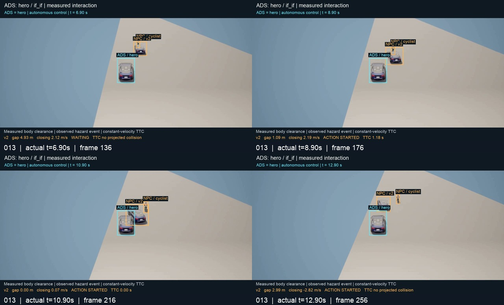
播放原速连续视频
实测：ADS 制动但仍与切入车发生接触。
动作后最多 6 秒的测量窗口：最小净空 0.00 m · 最小正 TTC 0.03 s。接触结果按完整运行记录；若发生接触，视频片段包含首次接触。
地图、轨迹与证据
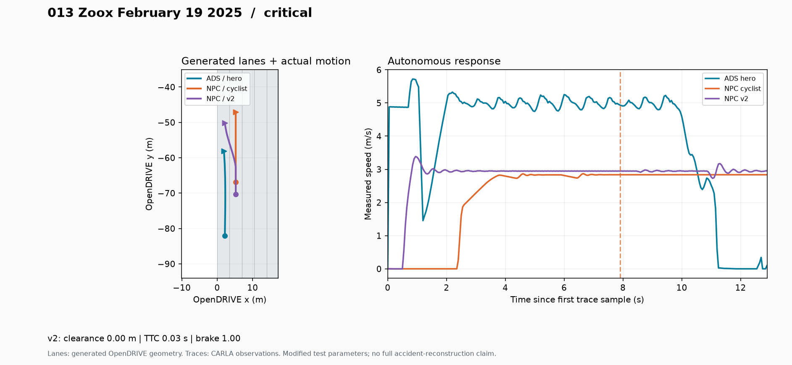
完整地图 · OpenDRIVE · OpenSCENARIO · 事故来源 · 完整原视频 · 完整执行日志 · 测量结果
保留骑行者在切入车前方的关系；实验速度与间距有调整，未验收原事故的接触部位。
035 · 左转与横向直行冲突
测试自车左转时应对横向来车的能力。
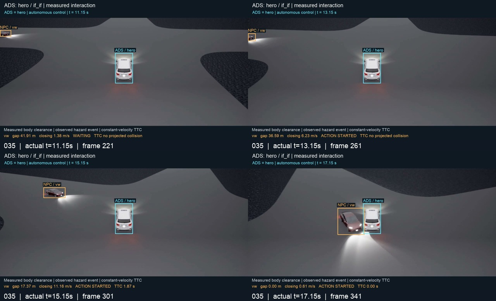
播放原速连续视频
实测：横向来车与 ADS 接触；ADS 转弯过程中也出现短暂车道偏离。
动作后最多 6 秒的测量窗口：最小净空 0.00 m · 最小正 TTC 0.022 s。接触结果按完整运行记录；若发生接触，视频片段包含首次接触。
地图、轨迹与证据
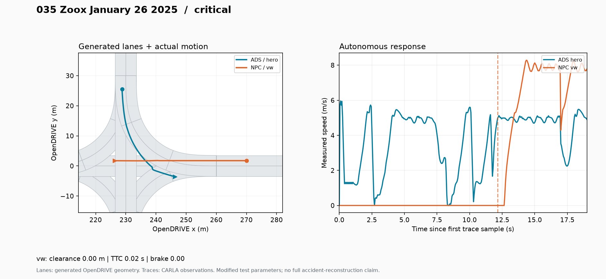
完整地图 · OpenDRIVE · OpenSCENARIO · 事故来源 · 完整原视频 · 完整执行日志 · 测量结果
NPC 车道轨迹通过检查；ADS 偏离是实测结果。交通信号合规未验收。
038 · 卡车邻车部分侵入
测试卡车面对邻车为骑行者让行而部分侵入的横向净空。
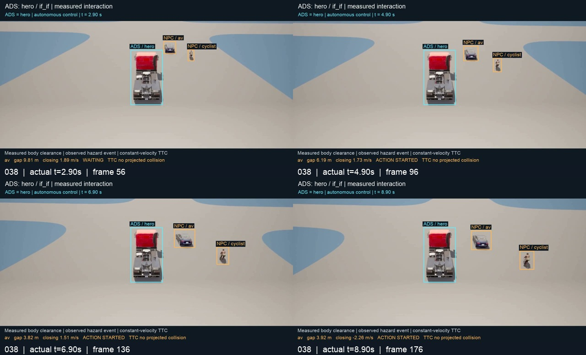
播放原速连续视频
实测：卡车制动，最小净空约 3.73 米，未发生接触。
动作后最多 6 秒的测量窗口：最小净空 3.73 m · 最小正 TTC 无有限值。接触结果按完整运行记录；若发生接触，视频片段包含首次接触。
地图、轨迹与证据
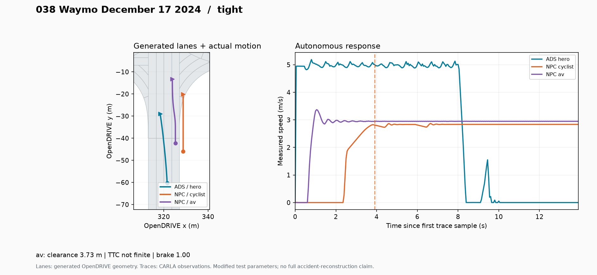
完整地图 · OpenDRIVE · OpenSCENARIO · 事故来源 · 完整原视频 · 完整执行日志 · 测量结果
被测 ADS 映射至报告中的卡车；六秒交互有效，完整长时运行最终达到墙钟超时，未复现报告中的接触。
055 · 横向车辆右转并入
测试路口右转车辆进入 ADS 行驶路径的交互。

播放原速连续视频
实测：NPC 右转后与 ADS 接触。
动作后最多 6 秒的测量窗口：最小净空 4.83 m · 最小正 TTC 无有限值。接触结果按完整运行记录；若发生接触，视频片段包含首次接触。
地图、轨迹与证据

完整地图 · OpenDRIVE · OpenSCENARIO · 事故来源 · 完整原视频 · 完整执行日志 · 测量结果
用普通车辆代理报告中的救护车；不测试应急车辆优先权，也未复现精确接触位置。
097 · 路侧车辆并线
测试相邻车辆并线导致的侧向冲突。
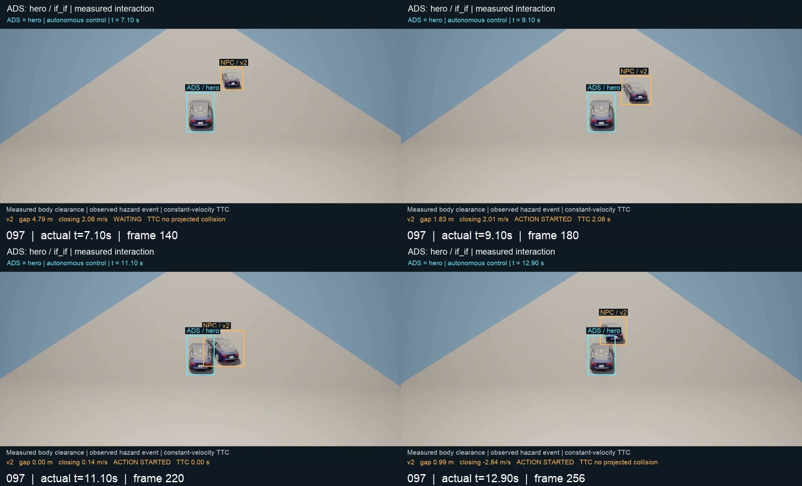
播放原速连续视频
实测：ADS 有制动，仍与并线车辆接触。
动作后最多 6 秒的测量窗口：最小净空 0.00 m · 最小正 TTC 0.008 s。接触结果按完整运行记录；若发生接触，视频片段包含首次接触。
地图、轨迹与证据
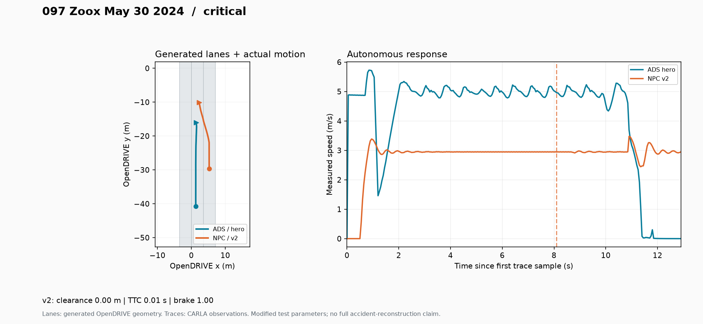
完整地图 · OpenDRIVE · OpenSCENARIO · 事故来源 · 完整原视频 · 完整执行日志 · 测量结果
源报告是停车后驶入；本压力变体将 NPC 设为低速接近，不能宣称复现停车起步全过程。
120 · 大型车辆路口转弯
测试自车起步通过路口时与转弯车辆的交互。

播放原速连续视频
实测：转弯车辆与 ADS 接触。
动作后最多 6 秒的测量窗口：最小净空 5.67 m · 最小正 TTC 0.933 s。接触结果按完整运行记录；若发生接触，视频片段包含首次接触。
地图、轨迹与证据

完整地图 · OpenDRIVE · OpenSCENARIO · 事故来源 · 完整原视频 · 完整执行日志 · 测量结果
保留起步与转弯关系；车辆模型未复现原公交车前部自行车架。
135 · 三车路口横向冲突
测试直行 ADS、横向来车和停止线前静止车辆组成的路口冲突。

播放原速连续视频
实测：横向 SUV 与 ADS 接触；运行后段有车道偏离。
动作后最多 6 秒的测量窗口：最小净空 5.14 m · 最小正 TTC 0.641 s。接触结果按完整运行记录；若发生接触，视频片段包含首次接触。
地图、轨迹与证据

完整地图 · OpenDRIVE · OpenSCENARIO · 事故来源 · 完整原视频 · 完整执行日志 · 测量结果
只验收可用交互，未复现 SUV 旋转后二次撞击静止车辆的完整事故链。
144 · 转弯时骑行者切入
测试自车转弯与骑行者侧向接近的避让表现。
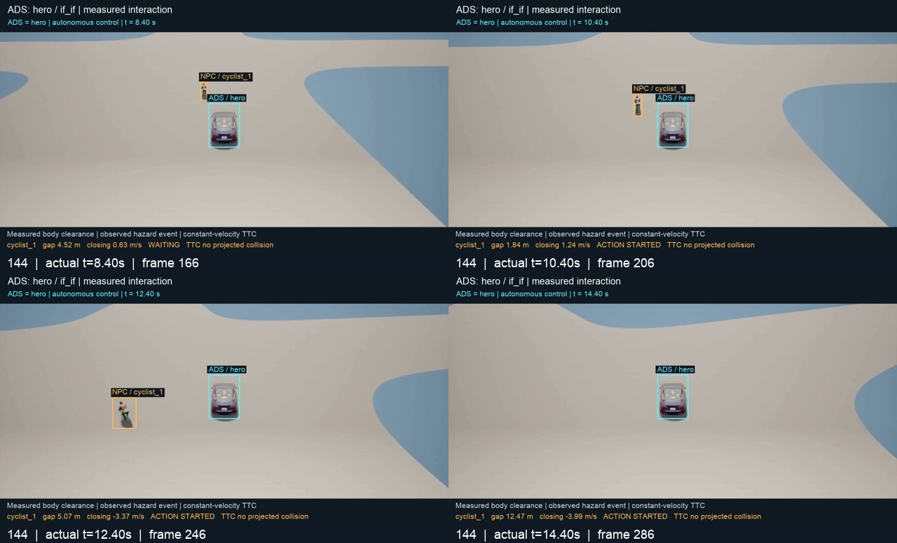
播放原速连续视频
实测：最小净空约 1.84 米，ADS 制动且出现车道偏离，未发生接触。
动作后最多 6 秒的测量窗口：最小净空 1.84 m · 最小正 TTC 无有限值。接触结果按完整运行记录；若发生接触，视频片段包含首次接触。
地图、轨迹与证据
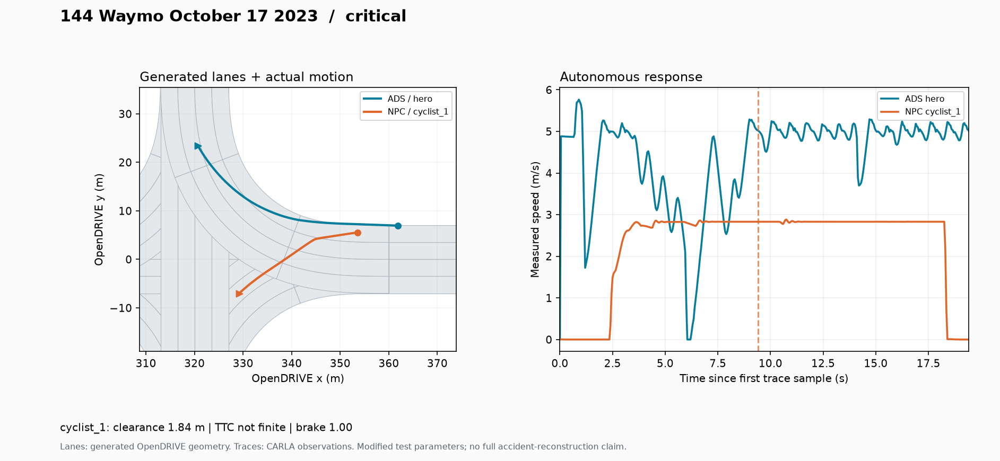
完整地图 · OpenDRIVE · OpenSCENARIO · 事故来源 · 完整原视频 · 完整执行日志 · 测量结果
初始速度经过实验校准；不把未碰撞等同于整个驾驶任务成功。
262 · 前车减速与跟车制动
测试前方 SUV 减速时 ADS 的跟车间距和制动响应。
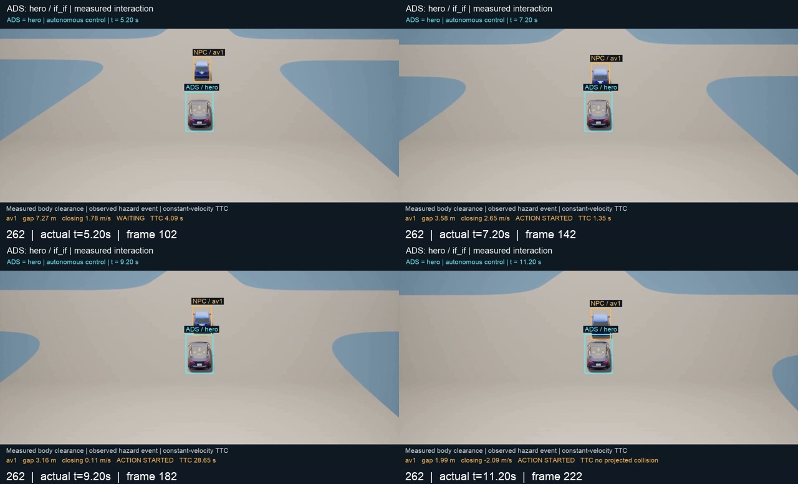
播放原速连续视频
实测：前车明显减速，ADS 制动并出现停走，最小净空约 1.19 米，未发生接触。
动作后最多 6 秒的测量窗口：最小净空 1.19 m · 最小正 TTC 0.845 s。接触结果按完整运行记录；若发生接触，视频片段包含首次接触。
地图、轨迹与证据
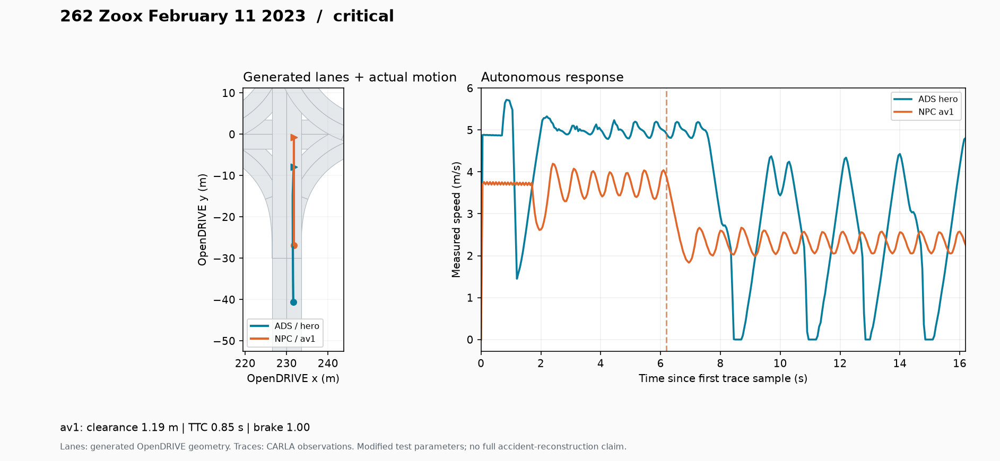
完整地图 · OpenDRIVE · OpenSCENARIO · 事故来源 · 完整原视频 · 完整执行日志 · 测量结果
ADS 映射至原报告中的后车；前车目标速度由 3.8 降至 2.4 m/s，实测峰值减速度约 3.71 m/s²，不声称复现原报告中的完全停车。
293 · 对向左转起始冲突
测试直行 ADS 与对向左转车辆的冲突。
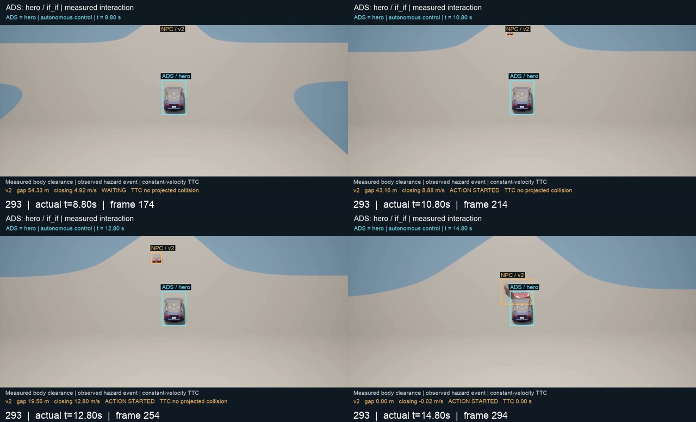
播放原速连续视频
实测：对向车辆开始左转时与 ADS 接触，ADS 制动至停止。
动作后最多 6 秒的测量窗口：最小净空 0.00 m · 最小正 TTC 0.035 s。接触结果按完整运行记录；若发生接触，视频片段包含首次接触。
地图、轨迹与证据
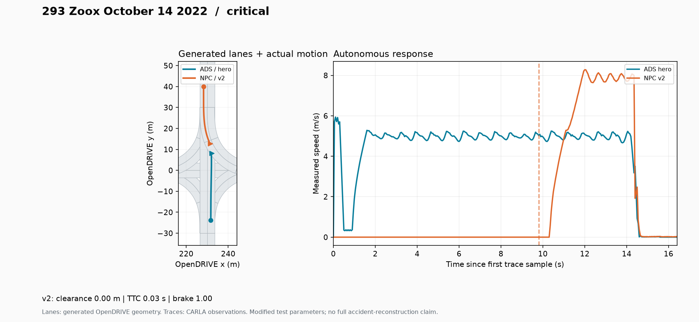
完整地图 · OpenDRIVE · OpenSCENARIO · 事故来源 · 完整原视频 · 完整执行日志 · 测量结果
已核实对向来车道路；碰撞发生在转弯早段，未复现完整转弯和原事故精确接触位置，信号合规未验收。